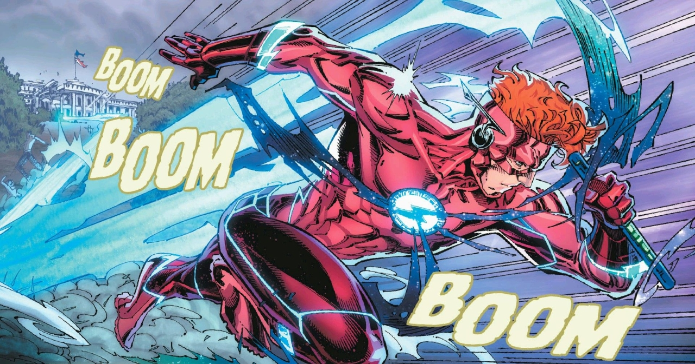

A História de Wally West - Kid Flash
Wally West surgiu nos quadrinhos da DC Comics em 1959, criado por John Broome e Carmine Infantino. Ele era sobrinho de Iris West e acabou ganhando poderes semelhantes aos de Barry Allen após um acidente com produtos químicos e um raio, tornando-se o Kid Flash. Durante anos, foi o parceiro juvenil do Flash, participando de aventuras ao lado da Liga da Justiça e dos Jovens Titãs. Com a morte de Barry Allen em Crise nas Infinitas Terras (1986), Wally herdou o manto e se tornou o terceiro Flash. Essa transição foi marcante porque ele deixou de ser apenas um ajudante para assumir o protagonismo como herói principal. Nos anos 1990, sob roteiros de Mark Waid, Wally ganhou profundidade psicológica e se consolidou como o Flash mais popular da época, em histórias como Velocidade Terminal e O Retorno de Barry Allen. Durante o reboot editorial New 52 em 2011, Wally foi praticamente apagado do universo DC, o que gerou frustração entre os fãs. Porém, em 2016, com DC Rebirth, ele retornou como peça central da mitologia da Força de Aceleração, recuperando seu papel como Flash e reconectando-se com a Liga da Justiça e os Novos Titãs. Atualmente, Wally voltou a ser reconhecido oficialmente como o Flash principal do universo DC, reafirmando sua importância na mitologia da editora. Na internet e na cultura pop, Wally West também conquistou espaço. Ele foi o Flash da série animada Liga da Justiça da Cartoon Network, dublado por Michael Rosenbaum, e apareceu em outras animações como Teen Titans e Young Justice. No live action, foi interpretado por Keiynan Lonsdale no Arrowverse. Além disso, Wally se tornou um personagem querido em fóruns e redes sociais, muitas vezes exaltado como “o Flash mais humano”, por suas falhas, humor e crescimento pessoal. Sua exclusão no New 52 e polêmicas em Heróis em Crise geraram debates intensos online, reforçando sua relevância cultural. Assim, Wally West não é apenas um sucessor de Barry Allen, mas um herói que representa evolução, humanidade e carisma. Nos quadrinhos, passou por altos e baixos editoriais, mas sempre retornou com força. Na internet, consolidou-se como símbolo de nostalgia e representatividade, sendo até hoje um dos personagens mais amados da DC.